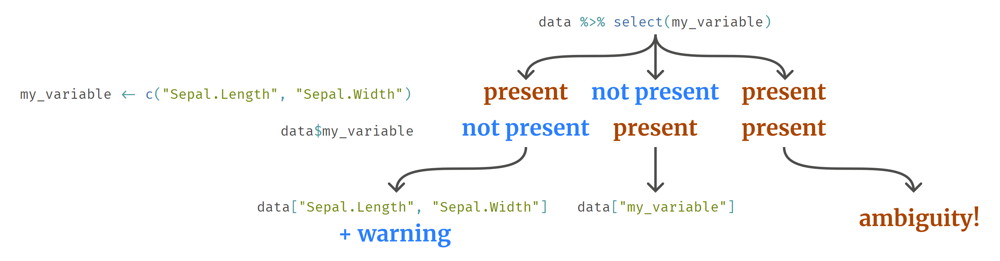

Hello everyone! After an extended hiatus for various reasons (from graduating college to navigating job changes and legal challenges), we’re back and eager to breathe new life into this blog. Given my deep interest in the fundamentals of advanced methods, today we’re delving into an essential topic every dplyr user will eventually face.
dplyr is meticulously designed with the primary goal of making code workflows read as naturally and close to plain language as possible. This design philosophy manifests in two critical dimensions: semantic and syntactic.
Semantically, the emphasis is on employing words with intuitive and easily understood meanings. For instance, dplyr and its friends adhere to a robust naming convention where function names typically take on verb forms, elucidating the action they perform.
Syntactically, the arrangement and combination of these descriptive words is paramount. Arguably, this is even more critical to the user experience. One of the most evident manifestations of this syntactical approach is the tidyverse’s hallmark feature: the pipe operator. But we are not going to tackle this today. I will look into caveats of another essential and intuitive syntactic feature: the use of symbols instead of strings to refer to variables within datasets. This offers a more natural-feeling mode of interaction but, as I have found out over many years of using R, this feature can lead to some problems.
Let’s compare how we select columns in a data frame using base R versus dplyr:
# base
iris[, c("Sepal.Length", "Sepal.Width")]
# dplyr
iris %>%
select(Sepal.Length, Sepal.Width)Notice the difference:
"Sepal.Length", "Sepal.Width", which are strings enclosed in quotes (single and double quotes are both valid).Sepal.Length, Sepal.Width, unquoted symbols.In the second case symbols are used to access columns in a data frame, just like we use symbols to access any variable or function that we store in our top-level environments. It is vital to grasp this distinction to sidestep potential pitfalls. which I will discuss in the rest of the post.
So, what symbols actually are? We use them as names of objects and this is the identity of their core. This is why it feels natural to use them to not only access top-level variables, but also variables in data. There is more to the nature of symbols, but we will come back to that later.
Notice that dplyr is smart enough to let you select variables by strings as well:
iris %>%
select("Sepal.Length", "Sepal.Width")## Sepal.Length Sepal.Width
## 1 5.1 3.5
## 2 4.9 3.0
## 3 4.7 3.2
## 4 4.6 3.1
## 5 5.0 3.6This is, however, inadvisable, as this is exactly what tidyverse designers wanted to avoid.
Now, consider a scenario where we have an external variable storing column names:
my_variables <- c("Sepal.Length", "Sepal.Width")Although it might seem intuitive to directly supply it to select:
iris %>%
select(my_variables)## Warning: Using an external vector in selections was deprecated in tidyselect 1.1.0.
## ℹ Please use `all_of()` or `any_of()` instead.
## # Was:
## data %>% select(my_variables)
##
## # Now:
## data %>% select(all_of(my_variables))
##
## See <https://tidyselect.r-lib.org/reference/faq-external-vector.html>.## Sepal.Length Sepal.Width
## 1 5.1 3.5
## 2 4.9 3.0
## 3 4.7 3.2
## 4 4.6 3.1
## 5 5.0 3.6This generates a warning. Given the tidyverse’s informative error messages, it’s wise to pay heed. Directly supplying can be ambiguous —- imagine having a column named “my_variables”. Which should be selected if we have both the column and the external variable?
 To ensure clarity, dplyr authors suggest using dplyr::all_of(), which explicitly converts a name vector into symbols, resolving any ambiguities.
iris %>%
select(all_of(my_variables))## Sepal.Length Sepal.Width
## 1 5.1 3.5
## 2 4.9 3.0
## 3 4.7 3.2
## 4 4.6 3.1
## 5 5.0 3.6Differentiating between passing a variable name or a symbol becomes trickier when constructing functions that internally use dplyr verbs. Consider:
my_subset <- function(data, my_var) {
data %>%
select(my_var)
}This might cause a lot of issues. Should we provide a string as a name (my_subset(iris, "Sepal.Length")) or a symbol (my_subset(iris, Sepal.Length))? To answer this question, we should first be clear about our intent (it would be nice to write a few words of documentation – for other users or for ourselves in the future). Both approaches are possible and valid. It is important to choose one and remain consistent across all functions that we write.
For instances where column names are passed as strings (common in Shiny apps when columns are selected by some input), one could utilize the previously discussed dplyr::all_of():
my_subset_with_strings <- function(data, my_var_as_string) {
data %>%
select(all_of(my_var_as_string))
}
my_subset_with_strings(iris, c("Sepal.Length", "Sepal.Width"))If we want to use symbols, just like directly in dplyr functions (mostly when those columns to use are predefined, in our internal functions or analyses), we have to embrace the variable:
my_subset_with_symbols <- function(data, my_var_as_symbol) {
data %>%
select({{ my_var_as_symbol }})
}
my_subset_with_symbols(iris, Petal.Length)
my_subset_with_symbols(iris, Petal.Length, Sepal.Width)In this way we let dplyr know that my_var_as_symbol has to be passed directly as user provided it. We can think of embracing as of cut-paste operation. We tell dplyr: “Take what user provided in place of my_var_as_symbol in function call and plug it directly into select, without creating any intermediate variables.”. Call to my_subset_with_symbols() is basically replaced with what lies inside of it.
acrossWhile the above solutions work seamlessly with functions like dplyr::select(), challenges arise when operations grow complex. Suppose we wish to craft a function, do_magic, that takes data, a special column, and several others columns. This function should add the special column to all others.
Leveraging dplyr::mutate(dplyr::across()) can achieve this. Its syntax is:
mutate(across(columns_to_mutate, function_to_apply))For custom, unnamed functions, the purrr formula syntax (~ expression with .x) is beneficial. In our case (without enclosing it in a function yet) could look like:
iris %>%
mutate(across(all_of(c("Sepal.Length", "Sepal.Width")), ~ .x - Petal.Length))Elegant, isn’t it? Now, let’s proceed by encapsulating this logic within a function where column names are passed as strings:
do_magic <- function(data, special, others) {
data %>%
mutate(across(all_of(others), ~ .x - all_of(special)))
}
# won't work:
# do_magic(iris, special = "Petal.Length", others = c("Sepal.Length", "Sepal.Width"))Surprisingly, it fails! When used within the context of across, dplyr seems unable to utilize the tidyselect rules (the ones that make all_of() possible). But we’re not defeated; let’s try embracing:
do_magic_but_better <- function(data, special, others) {
data %>%
mutate(across(all_of(others), ~ .x - {{special}}))
}
do_magic_but_better(iris, special = Petal.Length, others = c("Sepal.Length", "Sepal.Width"))## Sepal.Length Sepal.Width Petal.Length Petal.Width Species
## 1 3.7 2.1 1.4 0.2 setosa
## 2 3.5 1.6 1.4 0.2 setosa
## 3 3.4 1.9 1.3 0.2 setosa
## 4 3.1 1.6 1.5 0.2 setosa
## 5 3.6 2.2 1.4 0.2 setosaBy adopting this approach, it’s imperative to provide special as a symbol. Also, this does not look fine: one parameter is provided as symbol, another one is as character vector… We should always aim at being consistent. Either all column-like parameters should be symbols or all should be character strings. There are pros and cons to both ways. Let’s say that we want to stick to strings only. How can we do it?
all_of() does not work, use .dataThere’s a workaround for this conundrum:
do_magic_but_in_other_way <- function(data, special, others) {
data %>%
mutate(across(all_of(others), ~ .x - .data[[special]]))
}
do_magic_but_in_other_way(iris, special = "Petal.Length", others = c("Sepal.Length", "Sepal.Width"))## Sepal.Length Sepal.Width Petal.Length Petal.Width Species
## 1 3.7 2.1 1.4 0.2 setosa
## 2 3.5 1.6 1.4 0.2 setosa
## 3 3.4 1.9 1.3 0.2 setosa
## 4 3.1 1.6 1.5 0.2 setosa
## 5 3.6 2.2 1.4 0.2 setosaWhen you need to reference the underlying data within the context of functions, the .data pronoun comes to the rescue. As demonstrated, it operates similarly to directly accessing the data.
Throughout this post, we ventured deep into some of the intricacies of dplyr. We’ve unraveled how the package strives to make our code both semantic and syntactic, all while simplifying complex operations. The power of symbols and the utility of functions like all_of() and .data demonstrate just how dynamic and adaptable dplyr can be, especially when working with variable column names. While we’ve covered much ground, the world of dplyr is vast and constantly evolving. We are aware that all this embracing and tidyselect rules might be intimidating, but we will be continue to explore more facets of the tidyverse in future posts of “basic advanceds”, aiming to empower you with advanced techniques that enhance your data analysis journey.
If you’ve found this post enlightening and wish to delve deeper, or if you have any questions or insights, we’d love to hear from you! You can contact us directly via X. Alternatively, for those who prefer a more open-source avenue, feel free to open an issue on our GitHub repository. Your feedback and insights not only help us improve, but they also contribute to the broader data science community.
Until next time, keep exploring, learning, and sharing!
For those wishing to delve further or who may have lingering questions: Dplyr official programming guide